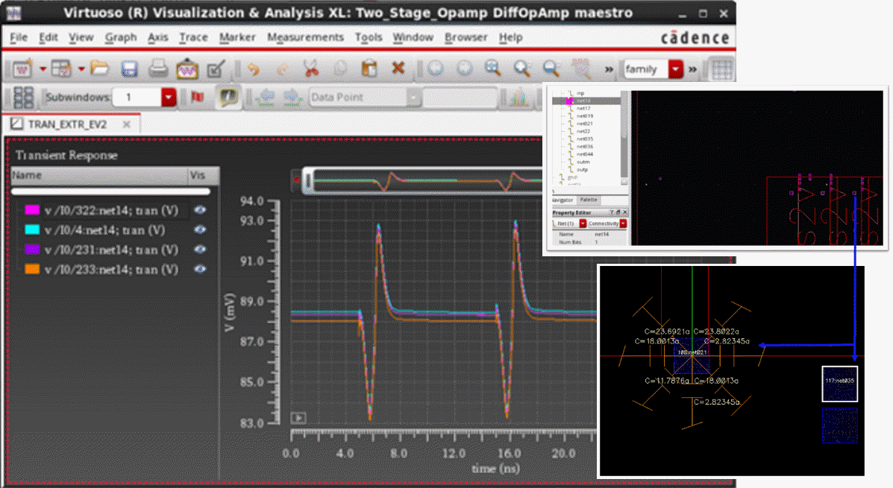

1
Parasitic Aware Design in Virtuoso ADE Explorer, Virtuoso ADE Assembler, and Virtuoso Schematics L/XL
This topic describes how to use Cadence® tools to investigate the effects of parasitics on circuits using Virtuoso® Parasitic Aware Design in the analog design simulation environments (ADE Explorer and ADE Assembler) and Virtuoso® Schematic Editor (Schematics L/XL) applications.
From the IC6.1.1 release, the availability of parasitic aware design functionality differs depending upon the software you access it from.
Licensing Requirements
You do not need any additional license to run Virtuoso Parasitic Aware Design from Schematic L, or Schematic XL, ADE Explorer, or ADE Assembler. The license already checked out by these products is used.
For information about licensing in the Virtuoso Studio design environment, see Virtuoso Software Licensing and Configuration Guide.
Introducing Parasitic Aware Design in ADE Explorer, ADE Assembler and Schematics L/XL
You can access parasitic aware design functionality through the following applications:
- Virtuoso® ADE Explorer
- Virtuoso® ADE Assembler
- Virtuoso Layout Suite XL
- Virtuoso Schematic Editor (Schematics L/XL)
- Virtuoso Specification-driven Environment (SdE)
- Virtuoso AMS Simulator (AMS)
This chapter discusses parasitic aware design functionality available in ADE Explorer, ADE Assembler and Schematics L/XL. It describes how to setup parasitics, display parasitics, and generate parasitic reports for your design.
This chapter contains sections on the following:
- Analog Design Flow Supported by Parasitic Aware Design
- Views Supported by Parasitic Aware Design
- Accessing Parasitic Aware Design Functionality in Virtuoso Layout Suite XL/GXL
- Smart-Parasitics Menu
- Accessing Smart View in ADE
- Accessing Parasitic Aware Design Functionality in ADE Explorer, ADE Assembler and Schematics L/XL
- Parasitics Menu
- Probing Out-Of-Context and In-Context
- An Analog Simulation Flow using PVS
Analog Design Flow Supported by Parasitic Aware Design
The following information outlines a typical analog design flow supported by parasitic aware design:
| Summary Action | Description |
|
The analog designer creates a schematic design using the Virtuoso Schematic Editor. The result of this is the generation of a schematic view. The designer would then simulate the schematic view using the Virtuoso Analog Design Environment (as a front-end to the Spectre or UltraSim simulators) |
|
|
The schematic design is then laid out on silicon. This is done either manually using the Virtuoso Layout Suite L, and referencing the schematic view, or it can be auto-assisted using Virtuoso Layout Suite XL. The result of this is the generation of a layout view. |
|
|
PVS (Physical Verification Schematic) performs LVS (Layout Versus Schematics) and confirms that the layout view accurately corresponds to the schematic view. Generally, the LVS result must be “clean” before you can proceed to the next stage. |
|
|
Quantus (Resistance / Capacitance and Inductance Extraction) establishes all the extra, non-designed, parasitic components that result from the physical layout. This includes, for example:
Quantus creates a parasitic netlist that can be output in one of the following formats:
For more information, see Views Supported by Parasitic Aware Design. Use of Quantus also provides the designer with feedback on the modified parasitic values and their impact on the performance. |
|
|
A key parasitic aware design function is parasitic probing. Here, a designer can open a schematic view, provide parasitic aware design details of the associated extracted view, and then probe (report on) nets on the schematic. This will generate summary (report) information on the parasitics (for example, parasitics for a net, parasitics between two terminals of a net, or the parasitics between two nets). For more information see Parasitics – Report Parasitics. |
|
|
A further key parasitic aware design function is to provide parasitic backannotation. Backannotation involves annotating each net on the schematic with summary information about the parasitics associated with the net. For more information see Parasitics – Show/Hide Parasitics. |
|
|
Another key function is called parasitic refinement. An extracted view can contain thousands of parasitics that can have a dramatic impact on analog simulation of the laid out design. Refinement allows a designer to specify which net parasitics are considered significant and to create a new version of the extracted view only containing these. For more information see Parasitics – Refine Extracted View. |
|
|
Using the Analog Design Environment for Post Layout Simulation |
Post layout simulation allows a designer to explore the parasitic impact on design performance. A testbench schematic is created containing instances of the design. A configuration is created (in the Cadence Hierarchy Editor) specifying which view should be used when simulating the design instances, for example schematic, av_extracted, or av_analog_extracted. Once again, Spectre or UltraSim can be used via the Analog Design Environment. For more information see Simulating the Design in ADE Explorer. |
|
Once simulation has completed you may want to monitor the signals at certain points. Another key parasitic aware design function is therefore to allow you to descend from the testbench schematic into the schematic view of the design instance (even though the extracted/refined view was simulated). When in this schematic view, the designer is said to be “out-of-context”. The Analog Design Environment allows a designer to perform out-of-context probing on the schematic, and parasitic aware design handles the mapping between the points probed on the schematic and the equivalent points in the much more complex netlist with parasitics. For more information see Out-Of-Context Probing. |
Views Supported by Parasitic Aware Design
Parasitic aware design features are used to analyze the effect of parasitic devices on a circuit. Once the physical design is complete, you can create an Extracted View or a Smart View using Quantus to support parasitic simulation. In ADE, parasitic aware design supports the following views for parasitic extraction:
Extracted View
The Extracted View is a graphical representation of the parasitic netlist that is used to debug circuits, and to verify and simulate post-layout designs.
Quantus QRC creates a parasitic netlist that can be output as a SPICE netlist variant (DSPF), which cannot be processed by parasitic aware design, or as an extracted view.
The extracted view typically includes parasitic components that are standard parasitic components from a given library (typically called “pres”, “pcap”, “pind”, and “pmind”).
A typical schematic design might contain, for example, 50 design elements, but the extracted view could contain many thousands of parasitic elements.
Smart View
The Smart View is an enhanced version of the extracted view. It provides the same functionality as the Extracted View, but with a few
- Benefits of Smart View
- Known Limitations of Using Smart View
- Features Supported in the Smart View Flow
- Prefixes in Instance Names in the DSPF File
Benefits of Smart View
The Smart View offers the following benefits during parasitic extraction:
- Delivers the fastest path to post-layout verification and simulation with the following performance improvements:
- Provides same usability and integration in Virtuoso and Virtuoso ADE platforms.
- Provides key post-layout simulation verification functionality, such as in-context cross-probing and back annotation.
- Uses DSPF file format output to allow direct support for Fast SPICE tools like Spectre XPS.
- Enables faster verification and simulation run times with Spectre APS and Spectre XPS.
- Enables the hierarchical extraction flow in Virtuoso ADE platform.
- Enables reporting of inductance and mutual inductance values in the netlist.
-
Requires no additional foundry enablement to support files such as .
trporicellmap.
Known Limitations of Using Smart View
Smart view output format does not support the following flows or extraction features:
- Parasitic Estimates
- Parasitic Filters
- SNA substrate extraction
- Wide band inductance model
- Third-party simulator support
- Multi-corner extraction for AMS
For more information on extracted view and Smart View, see the Quantus QRC Extraction User Manual.
Features Supported in the Smart View Flow
To know about the additional features or flows supported in the Smart View flow, see the following sections:
DSPF Support
The netlist generated for the Smart View is saved in the DSPF format. By default, this DSPF file is saved in ./simulation/<Lib>/<Cell>/<View>/results/maestro/SmartViewDSPF/.tmpADEDir_<login>/<lib_cell_view>/<subckt>.dspf.
The syntax of the netlist matches the SPF standards for connections. This means that the name of the last node in the netlist must be printed as <instance><delimiter><instance_pin>.
Generating a netlist in compliance with the SPF standards also provides significant performance improvement by reducing the netlisting time and peak memory usage.
Consider an example, where the Smart View includes the following:
Subsequently, a finger of M1 will have it its gate connected to one of these sub-nodes.
-
Earlier, the netlist would print the connections as follows:
-
Now, the netlist prints the connections as follows:
Here, the sub-node XM1_4__rcx#g is related to the net inm by the same connection to the sub-node inm#12.
The DSPF output must have the following .ccl settings:
If the Smart View has been extracted using the following command, the OA database contains bounding box information for that instance:
output_db -include_instance_bounding_box "true"
Therefore, when Virtuoso ADE netlists the DSPF, the instance section also includes the bounding box information as follows:
The DSPF file supports the QRC options. By using the QRC options, you can prevent cells from a file, or cells of a specific type from being included in the DSPF file. For example, you can specify the following QRC options:
-parasitic_blocking_device_cells_file
-parasitic_blocking_device_cells_type
For more details on the DSPF format, see the Quantus QRC Extraction User Manual
You can specify a new location to save the DSPF file by using the environment variable smartViewDSPFDirectory. Saving the DSPF file to the specified location allows it to be shared by every run instead of copying it for each run.
The number of parasitic resistors may be higher when you use Smart View, as compared to when you use the extracted view. This is because Smart View uses DSPF, and unlike SPICE, DSPF does not support abutment connections between M1.s and M2.d without a resistor. Additional resistors in the Smart View connect two device pins. These resistors are located on layers such as mwires, dwires, rwires, bwires, and more, and their values are 0.001.
"spectre.envOpts" "case_sensitive" to true in the .cdsinit file and re-netlisting, the Smart View automatically enables case sensitivity in the regenerated netlist and adds case_sensitive = true in the dspf_include statement.The DSPF generated by Virtuoso ADE relies on parameters being defined in the simulation information section of the Edit CDF form. If parameters are missing from this section, the results from EM/IR simulations might be inconsistent. However, timing simulations are not affected. For example, the netlist generated by ADE Assembler might contain the following statement:
XR0[1] net1#1 net2#2 GND#2 RES1 semiResL=1.4 w=99 + multFactor=1 semiResHeadNum=1 _par0="RES1" $x==2 + $y=3
Observe that since the simulation information section in the Edit CDF form does not contain the parameter l, it is not netlisted in the DSPF generated for the Smart View. This is because the resistor RES1 is a pcell and the parameter l is not referenced in the lower hierarchy, and this is why it is not used for the instance XR0[1].
To ensure that the l parameter is added to the netlist, add the following SKILL flag in the simrc file before netlisting:
nlCustomHierEmirParamList = 'list(list("RES1" list("l")))
This flag requires arguments in a format of list(list(model list(params)).
When this SKILL flag is set, the netlist will print the following statement for resistor RES1:
XR0[1] net1#1 net2#2 GND#2 RES1 semiResL=1.4 w=99 + multFactor=1 semiResHeadNum=1 _par0="RES1" l=1.4 $x==2 + $y=3
dspf_include provides special features for reading the DSPF format data, for example, port order adjustments, or handling of duplicated subcircuits. Ensure that you do not use the include or .include commands to read the DSPF format data because these commands do not have the special functions that the dspf_include or .dspf_include command provides.
.simrc variable hnlMaxLineLength does not affect the dspf_include links in the input.scs file.Related Topics
Port Order Handling in
Multi-process Corner Support
If you use a design block that is bound to a Smart View that contains multi-process corners (MPCs), you must set the environment variable autoSyncMPC to t. These multi-process corners are assigned a variable name in the format <ViewName_extractionCorner>. The maestro cellview displays these multi-process corners as a design variable.
There may be a degradation in performance when this environment variable is set, and you open a cellview that contains multi-process corners. By default, the environment variable is set to nil.
maestro view from a config file sets the AMS simulator as the default simulator. Changing the simulator to Spectre might not update the MPC variables as expected. To allow autoSyncMPC to automatically sync the MPC variables, it is recommended that you create a maestro view using the schematic and bind it to the config view.Resistor Bounding-box Support
To view multiple resistor bounding box components in the DSPF file generated for a Smart View, ensure the following:
- The design must have bends or U-shape routing.
-
The Smart View must have the following
.cclsetting:-include_parasitic_res_conductor_bounding_box "Multiple" -
If the
.cclsetting is included but the bounding box components are not visible in the generated DSPF file, it is possible that the design does not contain the components or the design is not appropriate. In such a case, choose a different design and regenerate the Smart View.
The following example shows the resistor bounding box components (such asllx1,lly1,urx1,ury1, and others) in the generated DSPF file:r_2_11276 11#a1 12#a1 0.0183713 $metal1_conn $lvl=3 $l=0.03 $w=0.1 $llx1=6.9 $lly1=19.2045 $urx1=6.98 $ury1=19.205 $llx2=0.05
$lly2=19.205 $urx2=573994 $ury2=16.3835 $llx3=0.008 $lly3=0 $urx3=6.97 $ury3=19.235 $x=6.94 $y=19.2195
When the design contains trapezoid resistors, the generated DSPF file shows the details in the following format:
r_11_141451 138#net021 139#net021 1.78345 $metal2_conn $lvl=10 $l=9.4395 $w=0.25 $llx1=40.145000 $lly1=39.390000 $urx1=40.225000
$ury1=39.640000 $llx2=31.520000 $lly2=39.390000 $urx2=40.145000 $ury2=39.640000 $llx3=31.270000 $lly3=39.390000 $urx3=31.520000
$ury3=39.640000 $llx4=31.270000 $lly4=39.640000 $urx4=31.520000 $ury4=39.825000 $llx5=31.270000 $lly5=39.825000 $urx5=31.520000
$ury5=39.920000 $llx6=31.190000 $lly6=39.920000 $urx6=31.270000 $ury6=40.155000 $llx7=31.270000 $lly7=39.920000 $urx7=31.300000
$ury7=40.155000 $llx8=31.170000 $lly8=39.905000 $urx8=31.190000 $ury8=40.155000
$t1=31.190000,39.905000,31.190000,39.920000,31.270000,39.920000,31.270000,39.825000
$t2=31.315000,39.920000,31.315000,40.140000,31.520000,39.935000,31.520000,39.920000
$t3=31.300000,39.920000,31.300000,40.155000,31.315000,40.140000,31.315000,39.920000 $x=35.687 $y=39.515
For more details on the DSPF format, see the Quantus QRC Extraction User Manual.
Prefixes in Instance Names in the DSPF File
The device names in a DSPF file generated during Smart View netlisting may not have the prefix required by the simulator to understand their types. Therefore, the tool needs to add a prefix to such devices. For example, a user-defined capacitor, R1, will require a prefix C so that the simulator can consider it a capacitor.
To set naming prefixes for devices, choose one of the following methods:
-
Use the default flow. In this case, no environment variables are set.The prefixes are applied as follows:
-
If the
namePrefixis the same as the first character of the device name, the netlister does not add a prefix to the instance name in the netlist. -
If the
namePrefixis not the same as the first character of the device name, the netlister adds thenamePrefixvalue to the instance name in the netlist.
This prefix is determined by thenamePrefixproperty defined in the Simulation Information section of the Edit CDF form.
For example, theinddevice is netlisted in the DSPF with theLprefix, when the simulator used is auCdl, auLvs, or hspiceD.
Typically, the Edit CDF form does not have anynamePrefixsettings for ams and spectre simulator. In such cases, the simulation fails due to the lack of correct prefixes. -
If the
-
Set the dspfNamePrefixSimInfo environment variable to the name of the simulator whose setting you want to use. For example, against the auCdl simulator, the
namePrefixproperty for a device is set toR. By default, this property will ensure that all resistor devices have theRprefix. However, instead you want to useRX, which is thenamePrefixfor hspiceD. In this case, set thedspfNamePrefixSimInfovariable tohspiceD. With this setting, the netlister ignores thenamePrefixvalue set for auCdl and uses the prefix specified for hspiceD. In this case, useSelfCDFInPostLayoutNetlist is ignored.
Consider that you have resistors in the netlist as shown below:R1@2 (net1#1 net02#2 gnd#1 ) resistor l=3.5e-06 wr=8e-07 + multi=(1) $x=62.422 $y=32.544
To netlist this correctly with anXprefix, setdspfNamePrefixSimInfoto auCdl because thenamePrefixfor auCdl isX.
XR1@2 (net1#1 net02#2 gnd#1 ) resistor l=3.5e-06 wr=8e-07 + multi=(1) $x=62.422 $y=32.544
This is applicable in cases when the auCdl prefix is not the same as the first character of the device name. -
Use the useSelfCDFInPostLayoutNetlist environment variable to specify the list of simulators from which the simulation-specific CDF properties are to be used to apply name prefixes to devices. In this case, dspfNamePrefixSimInfo must not be set.
If theuseSelfCDFInPostLayoutNetlistenvironment variable is set to include your current simulator, which is usually spectre, thenamePrefixvalue from the Simulation Information section of the Edit CDF form for the spectre simulator is used after considering the following rules:-
If the
namePrefixis the same as the first character of the device name, the netlister does not add a prefix to the instance name in the netlist. -
If the
namePrefixis not the same as the first character of the device name, the netlister adds thenamePrefixvalue to the instance name in the netlist. -
If the
namePrefixis not specified, the netlister adds the prefixXto the instance name in the netlist.
If none of the above rules are applicable,useSelfCDFInPostLayoutNetlistuses thenamePrefixvalue set for the auCdl simulator in the Simulation Information section of the Edit CDF form.
For example, when you specify the following:envSetVal("maestro.simulation" "useSelfCDFInPostLayoutNetlist" 'string "ams hspiceD")
-
If the current simulator is
ams, the netlister will get thenamePrefixvalue foramsfrom the Simulation Information section of the Edit CDF form. -
If the current simulator is
hspiceD, the netlister will get thenamePrefixvalue forhspiceDfrom the Simulation Information section of the Edit CDF form. -
If the current simulator is
auLvs, the netlister will get thenamePrefixvalue forauCdlfrom the Simulation Information section of the Edit CDF form.
The default is"", which means that thenamePrefixvalue from theauCdlsimulator is used. -
If the
Related Topic
Accessing Parasitic Aware Design Functionality in Virtuoso Layout Suite XL/GXL
You can use the Smart View to view and analyze parasitic elements independent of the ADE flow. You can access parasitic aware design functionality if the current view is one of the following types:
- a layout view
- an extracted view
- a Smart View
- a configuration view (the schematic can refer back to a configuration)
To use an extracted or a Smart View, you need to setup your design environment to use Quantus QRC. For more details, see Step 2: Building an Extracted View using Cadence Quantus QRC Extraction.
The parasitic display using Smart View provides a visual display of the parasitic elements in the view within a user defined threshold. You can probe nodes to view the net IDs and the net names for the selected nodes. Smart view properties can be used to analyze layer and connectivity details.
To access Smart View in Virtuoso Layout Suite XL/GXL, choose Smart-Parasitics from the Layout XL/GXL menu bar.
Figure 1-1 The Smart-Parasitics menu in Virtuoso Layout Suite XL/GXL
- The Smart-Parasitics menu is displayed only when you are working with a Smart View in Virtuoso Layout XL or GXL.
- In ICADVM20.1, you can use Smart View functionality in Virtuoso Layout Suite XL/EXL.
Smart-Parasitics Menu
Selecting Smart-Parasitics displays the following menu options:
Figure 1-2 The Smart-Parasitics menu commands
A summary of the Smart-Parasitics menu commands is listed below:
- Smart-Parasitics – Display Parasitics displays the parasitics on the selected nets or nodes on a highlighted set in the Smart View.
- Smart-Parasitics – Clear Parasitics removes the highlighted set of displayed parasitics in the Smart View.
- Smart-Parasitics – Overlay Layout opens a layout view in the background while keeping the Smart View in the foreground.
Smart-Parasitics – Display Parasitics
Select Smart-Parasitics – Display Parasitics to display the Display Parasitics form with settings related to Display and Threshold for capacitances and resistances.
The values entered in this form control the threshold values of parasitics to display. Set the minimum value to 0 to display all parasitics.

Figure 1-3 The Display Parasitics Form
The following table describes the fields on the Display Parasitics form:
To display parasitics in the Smart View:
- Open a Smart View in Virtuoso Layout Suite XL/GXL.
- Select Window – Assistants – Navigator to display the Navigator assistant.
- Choose Nets and select a net or an instance in the schematic.
-
Select Smart-Parasitics – Display Parasitics.
The Display parasitics form is displayed. - Specify the display settings and the threshold values for resistance, capacitance, and inductance.
-
Click OK.
The resistors and capacitors on the selected net are highlighted on the Smart View parasitic display.
Figure 1-4 The Smart View after resistance and capacitance parasitics are displayed
Similarly, the inductances on the selected net are highlighted on the Smart View parasitic display.
Figure 1-5 The Smart View after resistance, capacitance, and inductance parasitics are displayed
To change the style of inductance annotation, set the svInductorStyle environment variable to ROUND or SHARP.
You can annotate the inductance with or without the resistors connected in series by toggling the Resistance option in the Display Parasitics form.
By default, the Smart View does not display the names of net fragments for parasitic nodes. To display these names, select the Node Name option in the Display Parasitics form or set the svDisplayNodeName environment variable to t. Alternatively, select a square on the parasitic display and choose Parasitics – Probe Node
The size of the parastic nodes might be small, especially in case of complex technologies. In such cases, you can use the svDotWidth environment variable to control the display size of the parasitic nodes.
If the Smart View has been generated without any layer information, a Y3:drawing layer is created for the parasitic nodes. This ensures that the nets can be selected directly on the parasitic display or using the Direct Plot command, and then added to the ADE outputs.
Smart-Parasitics – Clear Parasitics
Select Smart-Parasitics – Clear Parasitics to remove the parasitics that are displayed by the Display Parasitics form.
Smart-Parasitics – Overlay Layout
Select Smart-Parasitics – Overlay Layout to display the corresponding layout view in the background while keeping the Smart View in the foreground. The background layout view is displayed in a new adjacent tab.
The following illustration shows a Smart View design with the parasitics displayed by selecting Smart-Parasitics – Display Parasitics.
Figure 1-6 The Smart View before the layout is overlaid
Selecting Smart-Parasitics – Overlay Layout displays the following view:
Figure 1-7 The Smart View after layout is overlaid
Accessing Smart View in ADE
Parasitic aware design allows you to access the Smart View feature in the ADE flow. You can display and probe parasitics, generate reports and make comparisons between the parasitic elements in the Smart View.
The typical flow to use the Smart View in ADE is as follows:
-
Open a
maestrocellview in ADE Assembler. - Run the simulation in your ADE Assembler setup. When the simulation run completes you can select outputs and probe the design on the schematic.
- In ADE Assembler – Parasitics/LDE – Setup form, select the Smart View in the Extracted tab.
- Select the output on the Results tab.
- Right-click and choose Direct Plot to descend into the Smart View to probe nodes directly in the parasitic display. See In-Context Probing.
Using the Smart View with ADE, you can analyze the extracted parasitics and their extraction results and determine the cause of unexpected outputs.
Accessing Parasitic Aware Design Functionality in ADE Explorer, ADE Assembler and Schematics L/XL
You can access parasitic aware design functionality if the current view is:
- a schematic view
-
an extracted view
- a Smart View
- a configuration view (the schematic can refer back to a configuration).
To access Parasitics from Schematics L/XL:
-
Select Launch – Plugins – Parasitics from the Schematics L/XL menu bar.
This will add a Parasitics Menu to the Schematics L/XL menu bar.The Parasitics menu is displayed by default when you are working with ADE Explorer or ADE Assembler.
Parasitics Menu
Selecting Launch – Plugins – Parasitics adds a Parasitics menu to Schematics L/XL with the following menu options:
Figure 1-8 The Parasitic menu items
A summary of the Parasitics menu options in Schematics L/XL is detailed below:
-
Parasitics – Set Up requires that you complete the necessary schematic, extracted, or configuration details before proceeding with parasitic aware design.
- Parasitics – Options displays the Options form whose value settings determine how parasitic aware design handles certain backannotation and parasitic probing tasks.
- Parasitics – Parametric Variables displays the Specify Parameters Values form which can be used to set and edit parametric values for use in parasitic simulation.
- Parasitics – Show/Hide Parasitics lets you choose to turn on or off the display of parasitic values in the current schematic view. This in turn controls parasitic backannotation.
- Parasitics – Report Parasitics lets you undertake parasitic reporting on a selection of nets and terminals.
- Parasitics – Refine Extracted View can be used to generate a refined extracted view that can be used for circuit simulation.
- Parasitics – Probe Design Inst/Net can be selected to probe a design instance or net, from the current schematic view, to extracted instances in the extracted view, or vice versa.
Parasitics – Set Up
When parasitic aware design is enabled only the Set Up and Options menu options are available.
- If you access Parasitics – Setup from a schematic or extracted cellview you will have to complete the required Schematic Cellview or Extracted Cellview sections in the Setup form before you can continue to use parasitic aware design functionality (see Parasitics Set Up for Schematic and Extracted Views).
- If you access Parasitics – Setup from a top level configuration, or after you descend into a sub-block of the configuration, you will have to complete the required Config Cellview or Simulation Data sections in the Setup form before you can continue to use parasitic aware design functionality (see Parasitics Set Up for Configuration Views).
Selecting Cellviews to use with Parasitic Aware Design
You will not be able to proceed with parasitic functionality until either the schematic and extracted cellviews have been entered correctly, or a configuration view and simulation results have been chosen.
You can specify a cellview to use as follows:
- By clicking on the Browse button on the Parasitics Setup form and locating the view in the Library Browser form.
- By choosing the Select by Cursor option and then clicking on the relevant view.
- By selecting the view from the appropriate form fields.
Initial Parasitic Setup
Parasitic setup can take one of three forms dependent upon the following scenarios:
-
If you open a schematic view you will be displayed with a version of the Setup Parasitics Form (Figure 1-9) that asks for extracted view details.
If you open a configuration you are asked for a simulation database (Figure 1-10). -
If a schematic in the design below the top-level view has been opened directly, just knowing the top-level view, or configuration, is not enough to determine which extracted view or Smart View (if any) corresponds to that schematic.
This is because the schematic cannot be associated with a hierarchical instance path. In this scenario, you must specifically select the extracted view.
However, as there is a risk that you may inadvertently select an extracted view that has not been simulated, the annotation of resistance (R) (Effective R Calculations) values will be disabled to avoid annotating incorrect effective values for the selected extracted view. - You have an extracted view open, in which case you must specify a matching schematic.
If required, you can change the Setup Parasitics form options at any time, with any changes made to the form being recorded for future use.
Parasitics Set Up for Schematic and Extracted Views
The Setup Parasitics form below will appear if you access parasitic aware design functionality from a schematic or extracted cellview.
Figure 1-9 The Setup Parasitics form for schematic and extracted cellviews
| GUI Item | Description |
|---|---|
- Library Name |
Enter or select the library that contains the schematic cellview information. |
- Cell Names |
|
- View Name |
|
- Browse |
Use to search through hierarchies locating extracted cellview information. |
- Select by Schematic |
Select this option, then click directly on the schematic window you want to use. |
- Library Name |
Enter or select the library that contains the extracted cellview information. |
- Cell Name/s |
|
- View Name |
Enter or select the extracted cell view.
The default (but not fixed) Extracted Cellview View Name, from Quantus QRC, displayed in the setup form is the first instance of a view containing the string " |
- Browse |
Use to move through hierarchies locating extracted cellview information. |
- Select by Cursor |
Select this option, then click directly on the extracted window you want to use. |
|
Use this field to set power and ground nets. Parasitic aware design uses these to determine which parasitic capacitances are decoupled (one side of the capacitor is connected to a power or ground net) or coupled (the capacitance is between two other nets). Parasitic reports allow you to select which types of capacitance to report. When you are selecting power and ground nets for the capacitance report, from a configuration, these selections must be made out-of-context. That is, you need to make your selections while in the schematic view of a block that is bound to an extracted view of a configuration. |
|
- Net Names |
Identify the power and ground nets that you want to use when differentiating between coupled and decoupled nets (see also Parasitics – Report Parasitics).
When entering a net name you can optionally add a “/” at the beginning of each net name. If omitted, the “/” is automatically added when comparing nets (this will not however be reflected in the Net Names field if a “/” was not originally entered). This is required for coupled and decoupled parasitic reporting to work correctly.
|
- Select From Schematic |
This option allows you to select the power and ground nets directly from the schematic rather than physically typing them in. |
Parasitics Set Up for Configuration Views
If you select Parasitics – Setup from a configuration view you are requested to enter database information.
If you have opened a schematic via a simulation configuration you will not need to specify either view as this will information will be derived when you perform Out-Of-Context Probing.

Figure 1-10 The Setup Parasitics Form (for configuration cellview in Schematics L/XL)
| GUI Item | Description |
- Library Name |
Enter or select the library that contains the configuration cellview information. |
- Cell Name |
|
- View Name |
|
- Simulator |
Choose the simulator that you want to use simulation data with. Currently, Ultrasim and Spectre are supported.
Where a schematic is associated with an ADE Explorer or ADE Assembler session, this option will mirror the settings in the ADE Explorer or ADE Assembler session and will consequently be disabled. For more information on ADE Explorer or ADE Assembler, see the Virtuoso ADE Explorer User Guide and Virtuoso ADE Assembler User Guide
|
- Results Directory for R Calculation |
Enter or choose the directory containing the dc op point simulation results that are required to calculate effective resistance (see Effective R Calculations).
Where a schematic is associated with an ADE Explorer or ADE Assembler session, this option will mirror the settings in the ADE Explorer or ADE Assembler session and will consequently be disabled. For more information on ADE Explorer or ADE Assembler see the Virtuoso ADE Explorer User Guide and Virtuoso ADE Assembler User Guide.
|
- Browse |
Use this option to move through hierarchies locating extracted cellview information. |
|
Use this field to set power and ground nets. Parasitic aware design uses these to determine which parasitic capacitances are decoupled (one side of the capacitor is connected to a power or ground net) or coupled (the capacitance is between two other nets). Parasitic reports allow you to select which types of capacitance to report. When you are selecting power and ground nets for the capacitance report from a configuration, these selections must be made out-of-context. That is, you need to make your selections while in the schematic view of a block that is bound to an extracted view of a configuration. |
|
- Net Names |
Identify those power and ground nets that you want to use when differentiating between coupled and decoupled nets (see also Parasitics – Report Parasitics).
When entering a net name, you can optionally add a “/” at the beginning of each net name. If omitted, the “/” is automatically added when comparing nets (this will not however be reflected in the Net Names field if a “/” was not originally entered). This is required for coupled and decoupled parasitic reporting to work correctly.
|
- Select From Schematic |
This option allows you to select the power and ground nets directly from the schematic rather than typing them in. |
Parasitics – Options
The parasitic aware design Options form contains a range of options related to Backannotation and Parasitic Probing Reports.

| GUI Item | Description |
|---|---|
|
(See also Parasitics – Show/Hide Parasitics) |
|
- Font Size |
Specify the label font size for displaying parasitic backannotation. |
- X Offset |
Sets the horizontal offset from the centre of the net when displaying parasitics. |
- Y Offset |
Sets the vertical offset from the centre of the net when displaying parasitics. |
- Backannotate values |
Specify the backannotation values that you want to view (R, C and/or L). |
|
(See also Parasitics – Report Parasitics). |
|
- Initially Sort By |
Specify the initial sorting method (Instance, Type, Value, From, or To) to be used when probing parasitics on nets. |
- Extracted Nets |
Check the grouped option to report parasitics for the whole design net when probing an extracted net (this will work as if probing in the schematic). For detailed debugging however, you should uncheck the grouped option. In this case the report will be specific to the selected extracted net fragment. |
|
(See also the Extracted Parasitics). |
|
- Net names on parasitic instance terminals |
Enables the display of the names of nets connected to terminals of parasitic instances in the extracted view. |
Parasitics – Parametric Variables
The Specify Parametric Values form can be used to set and edit parametric values specified on parasitic instances for use in parasitic simulation.
Quantus QRC extraction controls the specification of parametric variables, which are the result of using Multiple Rule Sets to run extraction on different process corners. For more information on this see Use Multiple Rule Sets in the Quantus QRC Graphical User Interface section of the Quantus QRC Extraction Users Manual.
Cmin and Cmax, and their current values, can also be loaded directly from the Virtuoso Analog Design Environment. Report results, for example when reporting capacitances on a net, will differ dependent upon changes made to variable values in the Specify Parametric Values form (for example any value changes made to Cmin and/or Cmax).
C
= Cmin * iPar("c-min") + Cmax * iPar("c-max")
-
Select Parasitics – Parametric Variables.
The Specify Parametric Values form is displayed. -
Select the
Library Name
and
Cell Name
whose variables you want to set (you can use the
Browse
button to invoke the Library Browser to assist this, or use the
Select By Cursor
button to select directly from the design canvas).Cell Name must be the Analog Design Environment (ADE) cellview where the variables were originally set.For information on how parametric variables are set and edited in ADE, see
Design Variables and Simulation Files for Direct Simulation in the Virtuoso ADE Explorer User Guide .
You can also click the Load Values button to load parametric variable values that were set in the Edit Design Variables form in ADE. Here, you should select Variables – Copy To Cellview in ADE before choosing to load these values in. -
Optionally, edit the values of variable to suit your requirements then choose Apply or OK.
To save changes to parametric values for use in ADE select Save Values. Once these edits have been applied you can load the new values back into ADE by selecting Variables – Copy From Cellview in ADE. - Click OK to apply the new parametric variable values and close the Specify Parametric Variables form.
Parasitics – Show/Hide Parasitics
You can choose to turn on or off the display of generated parasitic values in the current schematic view.
If you show/hide parasitics on a particular schematic (which, as mentioned, must be defined in the schematic hierarchy in the Schematic Cellview section of the Parasitics – Set Up form), and descend/ascend the hierarchy, the state will be remembered so that in the new level parasitics will continue to be displayed as in the previous level.
Figure 1-12 The display of parasitic values turned on
The use and operation of Show/Hide Parasitics is discussed further in
Parasitics – Report Parasitics
The following parasitic probing report options are available under the Report Parasitics menu option:
- Reporting on Nets (Net and Net to Net)
- Reporting on Terminal to Terminal
- Reporting on Net Capacitors
-
Reporting on All Nets
Figure 1-13 Available Parasitic menu reports
Sum Totals
Any sum Totals at the bottom of a report displays the effective and summed values (C, L, and K will always be summed, while R depends on the type of probing) for each parasitic type that has been found for the particular type of probing.
For example, even if you filter out R or C by deselecting their respective options at the top of the Parasitics Report form, the summary totals will still remain the same. If available, effective totals will also be displayed (these will not be available if a DC op point simulation has not been run).
For information on running a DC simulation, see Preparing for Resistance Backannotation (Running a DC Analysis).
Reported Values
Parasitic aware design uses the aelSuffixNotation function to print the values of capacitance and resistance, with 4 as the default number of digits set to be displayed.
It is possible to view rounded values in a report form rather than the value that is displayed on the extracted view.
For example, you may see r = 143.1453m on the extracted view but in the parasitics report the 4 digit setting would display r = 143.1m.
You can however change the number of digits displayed. For example, to get full precision you should set:
Sorting the Report Table
Parasitic report tables can be sorted by clicking on the desired column option header.
The default sorting method is specified using the Initially Sort By option in the Parasitics – Options form.
Saving Report Data
You can save the contents of a report table, for example, a parasitic report or an instance probing report, to a specified report file by clicking on the Save button at the bottom of the applicable form.
The save action will record the information as per any sort and filter specifications you have already made.
You also have the option to save the information as either a Text file (.txt), or a Comma separated value file (.csv). If you want to change the name of the report you can edit the Filename as required.
Figure 1-14 Saving report information
Reporting on Nets
If you choose to report on a Net or on a Net to Net basis, this will invoke the following Parasitic report form (Figure 1-15 or Figure 1-16).
The title bar of the Parasitic report displays the net location in a hierarchical format, for example: Parasitics for net /gnd! or Parasitics from net /gnd! to net /compout.
Before the Parasitics report form is displayed you will be prompted to select the appropriate net/nets that you want to report on.
Figure 1-15 Parasitic report for net /IN
Figure 1-16 Parasitic report for parasitics from net /gnd! to net /net17
The content of the Parasitics nets report forms can be specified in the Display section at the top of the report.
The columns displayed in the Parasitics nets report forms are related to:
Reporting on Terminal to Terminal
Using the terminal to terminal probing, you can report parasitics between two instance terminals or between a terminal and a pin on the same net.
The Parasitic Report assistant will report parasitics between the two most recent selections only. If multiple selections are done, all terminals or pins other than the last two selected will be ignored. Other object type selections are also ignored.
The format displayed in the title bar of the Terminal to Terminal Parasitics report is:
from (terminal|net) (<schTerm>(<extNets>+))+ to (terminal|net) (<schTerm>(<extNets>+))+
Here, the term net is used instead of terminal when a selection is taken from an extracted view, as only extracted nets would be available.
Also, (<schTerm>(<extNets>+))will be replaced by <bus_name> if you select All when you have a list of buses.
When performing a terminal to terminal probe or generating report (also known as a point-to-point probe), where two selected terminals map completely to the same extracted nets, a warning describing the situation will be issued. The resultant report will also reveal that no parasitics have been found between these terminals. This happens because the terminals are considered to be shorted, and parasitics will therefore have no influence on the interaction between the two terminals in question.
However, if you subsequently perform a whole net probe on the same net, parasitics could still be reported, even if the net is a two terminal only net.
For example, if you consider two mFactored transistors (mFactor = 2) T1 and T2, with the source of T1 connected to the drain of T2. Selecting T1-source and T2-drain, in the schematic, will identify that T1_m1-source is shorted with T2_m1-drain and T1_m2-source shorted with T2_m2-drain. As mentioned, terminal to terminal probing would complete, reporting no parasitics, however whole net probing will identify and report any parasitics that might exist between T1_m1-source and T2_m2-drain.
Selecting Leaf Terminals
The Select leaf terminals form is displayed when you perform terminal to terminal probing and select hierarchical terminals that have more than one leaf terminal.
From the Select leaf terminals form, you must select the terminals (for example, gate and drain) that you want to measure resistance values for.
Selecting individual terminals will prevent the results of net point probing (that has parallel resistors) being reported as a sum of the resistance values.
Reporting on Net Capacitors
To create a net capacitors report select Parasitics – Report Parasitics – Net Capacitors, and then select the net you want to report on.
Reporting on net capacitors generates the Capacitors for net report which displays summed capacitances (Sum C) between the selected net and all nets that it is connected to via parasitic capacitors.
Figure 1-17 Capacitors report for net /vdd!
Reporting on All Nets
Reporting on all nets generates the All Parasitics design report form.

Figure 1-18 All parasitics report for TOP design
The All Parasitics report lists each net in the design along with the total value for the net based on either the effective value or the summed value.
The decoupled C, coupled C, and coupled self C check boxes control what capacitors are summed for the sum C column.
You can also save the All Parasitics report information to a file using the Save button with the option to save the information in either text (.txt) or comma separated (.csv) format.
Parasitics – Refine Extracted View
Selecting the Parasitics – Refine Extracted View menu option will display the Refine Extracted View form with the name of the current extracted view in the title bar.
Figure 1-19 Refine Extracted View form with current view in title bar
The purpose of this option is to generate a refined extracted view that can be used for circuit simulation. The refined extracted view is based on the full extracted view created in Quantus QRC.
After the refine extracted view has been created, a window is displayed summarizing the parasitics in the new view. This information is also output to the CIW.
av_extracted, while the default parasitic aware design refined extracted view name is av_analog_extracted.For more information on this process, see Step 3: Building a Refined (Analog) Extracted View Using Parasitic Aware Design.
Within this form, you can specify the extracted parasitics required for the extraction.
The refine extracted view will not remove any resistance that is associated with inductors as long as the inductors are not filtered out. This will prevent the creation of zero-resistance loops in the refined parasitic net.
Parasitics – Probe Design Inst/Net
Select Parasitics – Probe Design Inst/Net to:
-
probe from a design instance or net in the current schematic view to extracted instances in the extracted view. The probe performed will raise the Extracted insts associated with... form (see Figure 1-20) from where you can pan and zoom to selected instances.
or -
probe from a design instance or net in the extracted view to the schematic view. The probe performed will highlight, but not zoom in on, the schematic instance. If the schematic instance is within a hierarchical block in an open schematic then the block will be highlighted.
If attempting to probe from hierarchical blocks/instances a warning message will be displayed in the CIW. To resolve this, you must descend the hierarchy (Edit – Hierarchy – Descend...) and probe at the leaf level.
If you are probing a schematic net that exits the current hierarchy level the probe will be restricted to the instances attached to that net in the current level and not the full design. Probing therefore remains localized.
After you have selected a regular device (instance or net) to probe, the relevant Extracted/Schematic insts associated... form is displayed.
This tabular form lists all of the Extracted/Schematic inst names, and their associated Type, that are related to the device that you selected. The results are viewed in sortable columns.

Figure 1-20 Extracted instances report form
For a design net, the displayed list contains all of the extracted or schematic instances that are attached to that net in the other view type.
If you select one or more extracted instances from the list (using the Control/Shift keys), this causes the extracted view to automatically zoom into those instances, highlighting the selected items in both the schematic and extracted views.
If performing a multiple factor (m-factor) selection, it is generally the case that the instances will be found, and highlighted in the same area of the chip. An m-factor device is where a single cell instance represents multiple instances of a parallel connected cell.
Clicking on the Save button in the Extracted insts... form displays the Save Instance Report form. For information on saving reports in parasitic aware design see Saving Report Data.
Probing Out-Of-Context and In-Context
In-context and out-of-context probing has particular relevance when you are performing backannotation and reporting on parasitics. A parasitic aware design permits out-of-context probing of post-layout simulation results, containing additional parasitic components. This type of probing is done on a schematic where the simulation used an extracted view.
With an out-of-context probe, parasitic aware design is referring to the view that is currently being displayed against the view that is specified in the configuration used for simulation.
You can run out of-context or in-context probing on simulation results only when the current designs have been simulated. See Simulating the Design in ADE Explorer.
Out-Of-Context Probing
Out-of-context probing occurs when you descend into any cellview other than the simulation cellview. For extracted views, parasitic aware design provides the functionality to map information from the schematic view to the post-layout view. You can reuse expressions created with schematic net and terminal names when simulating the extracted view and those net and terminal names are automatically mapped to their equivalent post-layout names.
Performing Out-Of-Context Probing in Extracted Views
To perform out-of-context probing in ADE Explorer or ADE Assembler, do one of the following:
- Select the Results tab.
-
Right-click on an output value and select Plot.
Or - In the Results tab, specify the plotting mode.
- Choose the Extracted View or the Smart View next to Plotting Template.
-
Click the Plot All icon.
The simulation results are plotted in the Virtuoso Visualization and Analysis XL window.
Alternatively, you can cross-probe using the Direct Plot functionality to plot the extracted net segments connected to instance terminals on different parts of the same net.
To use Direct Plot, do the following:
- In the Results tab, right-click the extracted view output, and choose Direct Plot – Main Form. The Direct Plot Form appears.
- Specify the Plotting Mode and click OK.
- In the schematic view, right-click and choose Descend Read. Alternatively, use the bindkey E to descend into the extracted view on the schematic. The Descend form appears.
- Specify the schematic view to descend into and click OK.
- Choose a net or terminal in the schematic view.
Selecting a point on a schematic net probes the voltage on the nearest instance terminal. The selected points are plotted as waveforms in the Virtuoso Visualization and Analysis XL window and the schematic view is displayed.
In-Context Probing
In the parasitic aware design environment, in-context probing implies probing the same cellview that is specified in the simulation configuration.
Note:Performing In-Context Probing in Extracted Views
To perform in-context probing, do the following:
-
In the ADE Assembler Results tab, right-click the simulation results for the
Smart Viewand choose Direct Plot – Main Form. The Direct Plot Form appears. - In the schematic view, right-click and choose Return. Alternatively, use the bindkey Ctrl+E to return to the top-level testbench.
-
Select the instance that contains the Smart View. Ensure that the
Smart Viewis selected to descend into and the mode is set to read-only. The Smart View is displayed. - In the Smart View, set the workspace to Basic.
- Choose Window – Assistants – Navigator.
- Choose a net in the Navigator Assistant. This plots the voltage on the net that you choose.
-
Do the following:
- If you are using the extracted view:
-
If you are using the Smart View:
-
Choose Smart-Parasitics – Display Parasitics. The Display Parasitics form is displayed.
The Smart-Parasitics Menu is displayed only in Virtuoso Layout Suite XL/GXL when you are working with a Smart View. - Specify the display settings and the threshold values for resistance and capacitance and click Apply. The parasitic display is updated with highlighted resistances and capacitances on the selected net.
- In the Smart View window, click the Zoom In toolbar button to view the values of the parasitic resistances and capacitances.
- Right-click a net in the Navigator and select Probe – Add. All nodes on the specified net are highlighted.
-
In the Smart View window, click the Zoom In toolbar button and select a square dot shape in the parasitic display. A small dot square represents a node on the net. Nodes can only appear in the parasitic display if the layer and location information for the specific node is available. The layer and location attributes are essential to create a physical handle to the node to allow viewing and selecting the node. This information is available in the
display_map_filefile. Ensure that this file is used if you want to display parasitics in the Smart View. -
Choose Smart-Parasitics – Probe Node. A concatenated string consisting of the node ID and the net name of the node is displayed on the selected node. The same node information is also displayed in the Virtuoso Visualization and Analysis XL window with the segments plotted, as illustrated in the following figure. 
-
Choose Smart-Parasitics – Display Parasitics. The Display Parasitics form is displayed.
An Analog Simulation Flow using PVS
This section discusses how parasitic aware design interacts with the Cadence Physical Verification and Extraction tools, PVS (Physical Verification System) and Quantus QRC (Resistance / Capacitance and Inductance Extraction), to create an extracted view.
Parasitic aware design functionality, such as parasitic probing and backannotation, can then be used to take account of the effect of parasitics. This can consequently improve the accuracy of your circuit simulation.
Parasitic aware design provides you with the functionality to annotate parasitic values including resistance (R), capacitance (C) and inductance (L) values on the schematic.
The following sections (not all of which are compulsory) will take you through a typical parasitic aware design flow in PVS:
- Preparing Cell Libraries
- Creating an Analog Extracted View
- Backannotating Parasitic Values
- Performing Backannotation
- Reporting and Probing Parasitic Values
- Creating a Configuration
- Simulating the Design in ADE Explorer
Preparing Cell Libraries
Before proceeding to create an extracted view using Quantus QRC, you need to provide the following views and component description format (CDF) information for analog primitives and parasitic cells.
| Parasitic cells (e.g. presistors and pcapacitors) must have: |
|---|
If required, the analogLib library contains examples of analog primitives and parasitic cells that you can copy to create your cell library.
You can find the analogLib in the following hierarchy:
$CDS_INST_DIR/tools/dfII/etc/cdslib/artist/analogLib
Preparing Library for Extraction
The following actions are required when preparing a library for parasitic extraction:
-
Describe the technology layers.For details about technology layers refer to the Incremental Technology Databases and Display Resources User Guide.
-
Add or modify the verification rules used by the PVS processes.
PVS processes include:
– Designed device extraction
– Layout versus schematic (LVS)
– Parasitic resistor and capacitor extraction (Quantus QRC)
Refer to the Quantus QRC Extraction Users Manual for information on creating verification and extraction rules. -
Prepare the PVS technology directory.
This directory must contain all the designed device extraction rules, verification rules, and those files required for parasitic extraction.
Again, refer to the Quantus QRC Extraction Users Manual for details about preparing the PVS technology directory.
Planning Your Design Guidelines
If you intend to extract parasitic components from the layout view and run a simulation with parasitics, you should use the following guidelines to avoid problems as you plan your design:
-
Devices, with the
componentNameparameter (inauLvssimInfo), should be set to either: If you do use these names to define your parasitics, be sure to set the appropriate values to ensure that they are properly reported. -
Do not use the LVS
permuteDeviceparameter to match groups of components in a series as that makes it impossible to determine which device to use for waveform probing. -
You can use the Quantus QRC
?LvsMatchRequiredparameter to ensure that the extracted view can only be created if the layout and schematic match up. -
Set the
permuteRuleparameter for devices that have permutable terminals. Parasitic Aware Design uses this rule to detect terminals that have been permuted in the extracted view.
The syntax to set the permuteRule is "(p term1 term2)". For example, for a MOS device with a permutable drain and source, you can set the permuteRule parameter as "(p D S)". Similarly, for a resistor, you can set this parameter as "(p PLUS MINUS)".
permuteRule parameter is not set correctly, out-of-context probing and parasitic reporting may fail.Creating an Analog Extracted View
Before attempting to generate an extracted view you should ensure that the following requirements are met:
- You have successfully prepared your cell library (see Preparing Cell Libraries).
- The design adheres to the suggested design guidelines (Planning Your Design Guidelines).
With these tasks successfully completed, you will now utilize PVS to compare the layout view to the schematic view.
PVS creates an internally formatted database from the layout view (this database contains only the designed devices). Quantus QRC then reads the database to extract the parasitics and to create the extracted view. This extracted view contains designed devices and parasitic devices.
The steps required for the successful creation of a refined analog extracted view are as follows:
- Step 1: Comparing the Schematic and Layout Views Using PVS
- Step 2: Building an Extracted View using Cadence Quantus QRC Extraction
- Step 3: Building a Refined (Analog) Extracted View Using Parasitic Aware Design
Step 1: Comparing the Schematic and Layout Views Using PVS
-
Start the Cadence software by entering an appropriate command at the prompt, for example:
virtuoso & - Choose File – Open in the CIW and open up a cell layout view to invoke the Virtuoso® Layout Suite Editing window (for example, Layout XL).
-
In the Layout Suite Editing window, choose Launch – Plugins – PVS.
The PVS menu is added to the menu bar of this window. -
Choose PVS – Run LVS.
The PVS LVS Run Submission form appears.
You can useavCompareRuleformGate(none)to ensure that the connectivity between the layout and schematic views are fixed. For more information on this, refer to the Physical Verification System User Guide. - If you want to load previously saved LVS run settings into the form, choose File – Load Presets and select a preset file name from the Load Presets File form.
-
To create a new LVS run, perform the following steps:
- Click Run Data to open the Run Data tab.
- On the Run Data tab, specify the path to the run directory in the Run Directory field.
- Click Rules to open the Rules tab.
- Specify the path of the technology mapping file in the Technology Mapping File field.
- From the Technology drop-down list, select a technology definition file for the process to be used.
- From the Rule Set drop-down list, select the name of the rule set to be used.
- Click Input to open the Input tab.
-
Specify the library name, cell name, and view name of the layout and schematic views in the Layout and Schematic sections, as shown below.
- Click Output to open the Output tab.
-
Ensure that the Create QRC Input Data option in the Additional Output section is selected.
This option generates the data required by Quantus QRC to perform parasitic extraction. -
Specify a name of directory in the QRCDataDir field.
A subdirectory is created by this name and the data required by Quantus QRC is saved in it. - Click LVS Options to open the LVS Options tab and select appropriate options.
- Click Submit to start a new LVS run.
The PVS Reports form is displayed. This form provides run status information. After the run is complete, the PVS LVS Run Status message box is displayed indicating the success status of the extraction results and the comparison results.
You can click Errors List on the PVS Reports form to display errors as the run progresses. For more details, see Checking LVS Run Report in the Cadence Physical Verification User Guide.
If there are errors, the tool prompts you to open LVS DE.
For more details on how to debug an LVS run, refer to Debugging LVS Comparison Runs in Cadence Physical Verification User Guide.
Step 2: Building an Extracted View using Cadence Quantus QRC Extraction
Once the comparison between the schematic and layout views has completed, you now need to run Quantus QRC (Resistance/Capacitance and Inductance Extraction) to extract the parasitic devices and build the av_extracted view.
The QRC (PVS) Interface form appears.
- In the Design Cell Name field, specify a name for the design cell.
- In the PVS/QRC Data Directory field, specify the path to the directory where the results of PVS were saved for Quantus QRC.
This is the same subdirectory name that you specified in the Output tab of the LVS Run Submission form. Refer to step k in the previous section.
- Ensure that the required QRC technology library is selected in the QRC Tech Lib field and the technology name is selected in the Technology field.
- Click OK to select the run.
The QRC (PVS) Parasitic Extraction Run form is displayed, as shown below.

- On the Setup tab, ensure that either Extracted View or Smart View is selected from the Output drop-down box.
- In the View field of the Setup tab, type the name of the view.
The default name for Extracted View is av_extracted, and in case of Smart View it is smart_view, but you can create the extracted view using another name.
On the Extraction tab, select an extraction type by using the Extraction Type drop-down list and specify options related to that extraction type.
-
Enter an appropriate entry (for example
gnd!) in the Ref Node field of the Extraction tab.
Ref Node is a capacitance extraction option for grounding caps. Capacitance is decoupled to the specified Ref Node. - Click OK to start the Quantus QRC run.
A progress form, which shows the progress of the Quantus QRC run, is displayed. When the Quantus QRC run is complete, a message box is also displayed showing the success status.
With the extracted view created, you can now use parasitic aware design to build an analog extracted view which can be used to filter parasitic devices.
For more information on Quantus QRC, see the Quantus QRC Extraction Users Manual.
Step 3: Building a Refined (Analog) Extracted View Using Parasitic Aware Design
The final step in this process is to build an analog extracted view using parasitic aware design functionality that is derived from the extracted view created using Quantus QRC.
av_analog_extracted view is only necessary if you want to filter parasitic devices out of the extracted view for a quicker simulation.-
Select Launch – Parasitics (in Schematics L/XL) from an extracted or schematic view.
This will add a Parasitics menu to the schematic editor menu bar. -
Select Parasitics – Setup from the Parasitics menu.
This will display the Setup Parasitics form where you can specify which views to use. If opened from a schematic you will only need to specify which extracted view to use (and vice versa).
-
In the Extracted Cellview section, ensure that you have selected the
av_extractedview that was created in Step 2: Building an Extracted View using Cadence Quantus QRC Extraction. - Click the OK button to setup parasitics.
-
Select Parasitics – Refine Extracted View from the Parasitics menu.
This will display the Refine Extracted View form.
-
Enter the new extracted view name in the View Name text field. The default refined analog extracted view name is
av_analog_extracted.If this field is not completed, and you attempt to run Refine Extracted View, the following message will be displayed in the CIW log window:WARNING: No analog view name specified. Specify a name in the ’Refine Extracted View’ form under the Analog Extracted View Name field. -
Click OK.
The Refine Extracted View form closes andav_analog_extracted(or your renamed view) is created and available for parasitic aware design.
After the refine extracted view has been created, a window is displayed summarizing the parasitics in the new view. This information is also outputted to the CIW.
Backannotating Parasitic Values
mmsim license to run Spectre for backannotation purposes.Preparing for Resistance Backannotation (Running a DC Analysis)
Backannotation of resistance values is dependent upon the results of a DC analysis of the extracted view. Whole net probing and the design report (see Parasitics – Report Parasitics) also make use of the DC analysis results. In all cases, the requirements on the simulation data are the same.
This section therefore describes the actions and requirements you must perform and meet to provide suitable simulation data.
- Action 1: Provide and configure a suitable testbench that uses Spectre to simulate the chosen extracted view
- The testbench must ensure that all nets in the design are stimulated.
- It does not matter where in the hierarchy the extracted view appears, as parasitic aware design uses the hierarchical instance path to locate the simulation results for the extracted view that corresponds to the out-of-context schematic.
- When backannotation is invoked, the configuration (see Creating a Configuration) bindings must match those that were in place during simulation. This is required, as problems could arise if you change and save the config after a simulation is run.
- Action 2: Run a simulation of the testbench that includes a suitably configured DC analysis
-
The analysis must be configured to save DC operating Point. This is part of the DC Analysis in Spectre and the Transient Analysis in Ultrasim.For information on running a DC operating point analysis, see Setting Up for an Analysis in the Virtuoso ADE Explorer User Guide.
- The analysis must not be swept.
-
The DC analysis must use the
gminsimulator option to ensure that the current flows through nonlinear devices and nets with no DC path to ground.
Thegminvalue should be set low enough so as not to impact the DC solution. Setting thegminvalue as low as possible will also provide for more accurate effective R results. Spectre or Ultrasim - the simulators that support Effective R Calculations - will issue a warning if thegminvalue is too high. However, the lower thegminvalue, the increase in the likelihood that the simulation will not converge. Additionally, you may also want to consider attempting to create a R-only extracted view which could reduce the influence of capacitors on the net.
Using thegminconvergence option is the default.If thegmininfluence is significant, in terms of the net current, then the resistors placed around the capacitors, for adcOpcalculation, will create a significant contribution to results, and will be reflected as distorted resistance values. For example, if you receive thegminwarning, R values may be reported in the 100 megohm range, when in fact they are in the ~10 ohm range.If you are caught between the choice of continuing with no convergence or proceeding with a value that generates agminwarning, you should proceed with the warning-generating value, but only consider returned backannotation values as “approximations”, suitable only for quick feedback.You can set the gmin option in the Simulator Options form, which is accessible via an ADE Explorer window by selecting Simulation – Options – Analog in the Resistance Options section (in ADE Explorer or ADE Assembler if you right-click on a Spectre or UltraSim test, an Options – Analog selection will be displayed). For more information on adjusting Spectre’s tolerances, see the Spectre Circuit Simulator User Guide - Identifying Problems and Troubleshooting chapter.
Running the testbench simulation will produce two datasets of interest:
-
dcOp
A dataset that contains all saved node voltages. -
dcOpInfo
A dataset which contains DC operating-point data for each instance in the design. This will include terminal currents, voltage drop between terminals, and device power consumption.
Effective R Calculations
An effective R value is a single number distillation of complex physical parasitic networks, including power dissipation and current. The use of a single number makes annotation to each logical net of the schematic possible. You can use this single effective R value, per net, to monitor changes to the layout that are made at each iteration request. This will check and confirm that you are correctly reducing the parasitics on key nets.
This value also normalizes the parasitic network on each net, even though the parasitic network itself may be considerably different between iterations. This could be due to changes in the layout of the net, or the layout around it, that influences its parasitics, for example the number of parasitic elements and connectivity. Alternatively, parasitic networks could also change as a result of Assura parameters, such as fracture length.
The DC simulation results are used to calculate the backannotated resistance. These results can have different values for the same design, based on the value of gmin compared to the design component values (see also Preparing for Resistance Backannotation (Running a DC Analysis).
Calculation of effective R is based on the current at the source (iS) and drain (iD). If iS == 0 and iD == 0 then effective R is not calculated as there is no current flow and no power. If either of iS or iD is a non-zero value, effective R is calculated as:
I is current at source if , or
There may be a few thresholds involved while working out the current. For example, there can be an initial threshold from the DC-OP attribute “abstol(I)”. If this does not exist, then the environment variable, mspsAv currentThreshold, is used. If the environment variable is missing, is used.
Effective R value is a measure of the power lost through the parasitic resistor network (or equivalently, the delta between the power entering the network and the power leaving the network), normalized by the total current entering (or leaving) the network.
Combining V=IR with P=VI, it is calculated as:
P is the sum of the power through the parasitic resistors in the network.
I is the current entering (or leaving) the network.
There could be situations where the capacitor was annotated correctly, but the effective resistance is not annotated on each node. In such cases, the Spectre log reports that a large number of parasitic resistors, pRes, have been reduced when the Enable Post Layout Optimization option in the High Performance Simulation Options form is used. This is why currents for parasitic resistors, pRes, are not saved by Spectre and parasitic aware design reports effective R as 0 for most of the nets.
To see the effective R when effective R annotations are not available, deselect the Enable Post Layout Optimization option in the High Performance Simulation options form.
Backannotation Labelling
Assuming that you have suitable simulation results at hand (see Preparing for Resistance Backannotation (Running a DC Analysis)), backannotation can be performed.
Parasitic aware design provides you with the functionality to annotate parasitic resistance (R), capacitance (C) and inductance (L) values on the schematic when Parasitics – Show/Hide Parasitics is used.
-
Analog Designers use many tools and techniques, including dynamic-analysis tools such as simulators, and static-analysis like parasitic aware design, to understand the impact that the post-layout parasitics have had on their previously “ideal” design. In order to identify spots where values of parasitic resistance are a concern, designers want to display and analyze the resistance values of these networks of resistors using parasitic aware design and ADE Explorer or ADE Assembler/Schematics L/XL. Physical hot spots are identified as unacceptably large values annotated onto logical schematic nets by parasitic aware design. For resistances, these values represent the ‘effective resistance’ of each net (see Effective R Calculations), regardless of the complexity of the parasitic networks that each represents, or the number of net terminals.
-
~ label
If a net has two or more terminals, the R value will use an approximation symbol (~) to indicate that the value uses the delta power method to approximate a resistance for the net. -
- - label
The “- -” label indicates that you have backannotated without any simulation results being set up. -
NA label
If the necessary simulation results are not available to allow delta power calculations for specific nets, for example, where a subset of voltages or currents have not been saved, the annotated R value will display the string “NA” for “Not Available”.
If a string with NA is displayed, a (one off) message will be displayed in the CIW as follows:
“Parasitic R values are not available due to missing/incomplete simulation results. Please run a DC analysis and supply the path to the results directory via the Parasitics Setup form.” -
NS label
If a net is not stimulated during simulation, the current through it will be 0, which makes it impossible to calculate an effective R value. in such cases, the annotated R value will be the string “NS” for “Not Stimulated”.
If a string with NS is displayed, a (one off) message will be displayed in the CIW as follows:
“Effective R values are not available on nets with no stimulus (nets with ‘r=NS’). Review the simulation test bench to ensure that there is current through the net and resimulate.”“Not stimulated” basically means having no current flowing through the net. This can occur in DC simulation if all the parasitic resistances are removed from the net. For example, if the extraction did not include R extraction, or if the extracted view, that is being simulated, has been refined so that parasitic Rs have been removed from the net.
-
~ label
- The value displayed for C is an arithmetic sum of parasitic capacitance.
- The value displayed for L is an arithmetic sum of parasitic inductance.
Persistence of Backannotation Labels
If you open a schematic cellview in edit mode, and perform backannotation, the backannotated labels will be persistent, and be written to the schematic database. However, if you open the schematic in read-only mode, the backannotated labels will only be temporary.
Performing Backannotation
Backannotation functionality is available through:
Backannotating From the Parasitics Menu
For backannotation purposes, you can access parasitic aware design functionality, from a schematic window, by selecting Launch – Parasitics (in Schematics L/XL) to display a Parasitics menu (for more information see Parasitics Menu). There is a Show/Hide Parasitics toggle menu-item to inform you if annotation is currently active or not.
If you are attempting to backannotate via the Parasitics menu, you should first of all consider the following scenarios:
Scenario 1: The Current Schematic Window is Associated With a Current ADE Session
Here, the Show/Hide Parasitics toggle menu-item is identical to that in ADE Explorer (see Backannotating From ADE Explorer) and operates in the same manner. That is, no parasitic aware design setup is required to enable the Show Parasitics menu because the required information is available from the ADE session.
Scenario 2: The Schematic Window is NOT Associated With a Current ADE Session
In this scenario, you are required to perform the parasitics setup step (see Parasitics – Set Up) so that parasitic aware design can locate the simulation results directory and extracted views.
Only after setup is completed will you be able to annotate parasitic values.
Verifying a Configuration Setup
When a configuration setup (Parasitics – Set Up) is used, you can specify the design that was simulated, the simulator, and the simulation results directory. When you click the OK or the Apply buttons in the Setup form, parasitic aware design will check that the results directory is valid and will also verify that it contains the dcOp and dcOpInfo datasets. If the directory specified does not meet these requirements, an error will be displayed and the Show Parasitics menu-item will remain disabled.
Where a schematic is associated with an ADE session (Scenario 1 above), the Setup parasitics form will still be available. The simulation cellview, Simulator, and Results Directory for R Calculation fields will mirror the settings in the Analog L session and will consequently be disabled. This therefore means that you cannot change any parasitic aware design settings so that they are out of sync with ADE. It also indicates that other parasitic aware design functionality must use the simulated design from ADE, when available, to determine what extracted view to use, and that other parasitic aware design functionality must be able to operate under a configuration.
Backannotating From ADE Explorer
Setting up parasitics (see Parasitics – Set Up) is normally required before parasitic aware design functions are enabled. However, with all the information, that parasitic aware design requires to determine the extracted view being available in the ADE session, along with the simulation results directory, the setup step is not required.
dcOp and dcOpInfo datasets in the current simulation results read directory, and that you are currently out-of-context.Backannotating from ADE Explorer therefore requires the following steps:
-
ADE Explorer must be started from the top-level schematic of a configuration view. You must therefore open a configuration view, then open the top-level schematic view.
-
Select Launch – ADE Explorer to display the Virtuoso ADE Explorer window.
-
From here, select Results – Annotate.
This displays a sub-menu which includes Show Parasitics and Hide Parasitics. The Show/Hide Parasitics menu entries are enabled dependent upon whether parasitic aware design is active or not.Results – Annotate is only enabled whendcOp pointsimulation results are available. That is, parasitics will only be shown when effective resistances (see Effective R Calculations) can be calculated using the results. It will not be enabled to show basic results withR=N/Awith any other type of simulation results. -
Click the Show Parasitics menu option.
Selecting Show Parasitics causes the schematic editor window, associated with the current ADE Explorer session, to show parasitic annotations when displaying in an out-of-context schematic. When the schematic is in-context, no parasitics will be displayed and a message is displayed in the CIW to inform you why there are no annotations. As you navigate through the schematic hierarchy, the annotations will change as appropriate.
If the DC simulation results do not include the necessary data for a specific net, then an annotation of “NA” (Not Available) will be set.
Parasitic annotation will remain active until you choose to Hide Parasitics.If there are no DC simulation results available (see Backannotation Labelling), and C annotation is disabled, Show Parasitics will be grayed out. Likewise, if there has been no extracted view specified in the config.
Reading Simulation Results
You can change where the directory simulation results are read from by using the Results – Select option in ADE Explorer.
ADE Explorer uses this directory when plotting data, annotating schematics, and annotating parasitics. Parasitic aware design looks for the dcOp and dcOpInfo datasets in the current simulation results directory. If you run a new simulation in ADE Explorer, ADE Explorer will send a message to parasitic aware design to hide backannotation labels, if they are visible, and discard any backannotation that is cached.
Reporting and Probing Parasitic Values
By probing the schematic av_extracted or Smart View, you can examine the instances of parasitic components. The name, value, and net connectivity can be displayed for each parasitic instance.
To view the parasitic instances in the av_extracted view for probing, the interconnect layers need to be marked as selectable in the layer selection window (LSW). Use the AS (All Selectable) button in the LSW to make all the layers selectable (AS is the default).
In the extracted view, the terminals are not readily accessible. For example, they could be minuscule terminals on the pcapacitors, or they may not exist at all, as in the case of devices which are now just rectilinear layers.
Therefore, in the extracted view, you are required to select the net segments. The net names, such as “1:netX”, “2:netX”, and so on, come from PVS, and parasitic aware design does not have any control over the name ordering or continuous nature of the numbers. For example, for the schematic net “NetX”, the extracted view segment could be “1:netX”.
In summary, net-to-net probing, in the extracted view, returns parasitics between the selected net segments, rather than maintaining the same definition, as in the schematic view, where parasitics between the two “whole” schematic nets are returned.
Reporting Parasitic Instances
To probe parasitic values, you should perform the following:
-
Select Parasitics – Report Parasitics.
If the Parasitics menu is not on view in the current session window, you can display it by selecting Launch – Parasitics (in Schematics L/XL). -
Choose, from the sub-menu items, what kind of probing you want to perform: Net, Net to Net, Terminal to Terminal, Net Capacitors or All Nets.
For more information on these options see Parasitics – Report Parasitics.
Selecting any of the first three report options listed (Net, Net to Net, Terminal to Terminal) will display the Parasitics report form. Go to Step 3.
Selecting Net Capacitors will display the Capacitors for net form. Go to step 4.
Selecting All Nets will display the All Parasitics (Design Report) form. Go to step 5. -
The Parasitics report form allows you to choose which parasitic values and information to Display: R, decoupled C, coupled C, self C, L, and/or K (for descriptions of these values see Display options).
You can sort the table by clicking on the required column header and save the report contents to a separate.txtor.csvfile.
See also Probing Parasitic Instances. - The Capacitors for net report form displays the summed capacitances (Sum C) between the net and all nets that it is connected to via parasitic capacitors. No report will be generated for “0” capacitances, and no distinction is made between power/ground, and other nets.
-
The All Parasitics form (Design Report) lists each net in the design, and the total value for the net, based on either the estimated or summed value. Again, the report information can be saved in either
.txtor.csvformat.
For more information on the All Parasitics form, see Reporting on All Nets.
If you select a parasitic instance from the Parasitics report form, and the extracted view is open, then the extracted view is zoomed to the component symbol associated with the parasitic instance, and the cursor is moved to rest on the symbol (the From and To nets are also highlighted).
This zoom feature works for the Net, Net to Net, Terminal to Terminal and Net Capacitors options.
Probing Parasitic Instances
- For Terminal to Terminal options click two pins or instance pins in the schematic or nets in the extracted view to collect all the parasitics between two points.
-
For Net to Net options click two nets in the schematic or extracted view to collect parasitic capacitances between two different nets.
To perform Net to Net probing, you must run Quantus QRC extraction using coupled capacitors (choose Coupled in the Cap Coupling Mode drop down list on the Extraction tab of the Quantus QRC Parasitic Extraction Run form).
A list of the collected parasitic instances appears. Select an instance from this list to highlight the component symbol associated with this parasitic on the extracted view.
Probing Buses for Parasitics
To probe parasitic values in a bussed net, you should perform the following:
- Select Parasitics – Report Parasitics.
- Choose either Net (continue to step 3), Terminal to Terminal (step 4), Net to Net (step 5) to display the Parasitics for net form.
-
For information about parasitics on whole nets, click a bus in the schematic view to display the bits in the Select bits from bus form. Then:
-
Choose the bits of interest from the list (to select multiple bits, click and hold the
Shiftkey while you select the bits, or choose the Select All option) and then click the OK button. - The parasitics report form appears and none is displayed in the Select cyclic field (default state).
-
Choose one or all of the bits in the Select cyclic field (use Select All to select all bits).
An ordered list of the parasitics for the selected bus bit or bits appears. - Sort the parasitics by R, decoupled C, coupled C, L, and/or K as required.
-
Click Save to write the probed parasitics to a file.
The Save Parasitic Probes form appears. - Enter the filename into the Filename field and click OK.
-
Choose the bits of interest from the list (to select multiple bits, click and hold the
- To collect all the parasitics between two points (terminals), click Terminal to Terminal, then select bits from the first bus terminal. The bits in the second terminal are automatically matched to the bits in the first terminal. Both selected terminals must be connected to the same net in the schematic. Then:
- To collect all the parasitics between two nets, click Net to Net and then select bits from each of the bus nets in the schematic view. Then:
-
To probe a bus for net capacitors, click Net Capacitors and then click a bus in the schematic view to display the bits in the Select bits from bus form.
-
Choose the bits of interest from the list (to select multiple bits, click and hold the
Shiftkey while you select the bits). -
Click OK.
The parasitics report form appears and none is displayed in the Select cyclic field (default state). -
Choose one or all of the bits in the Select cyclic field (use All to select all bits).
An ordered list of the parasitics for the selected bus bit or bits appears. -
Click Save to write the probed parasitics to a file.
The Save Parasitic Probes form appears. - Type the filename into the Filename field and click OK.
-
Choose the bits of interest from the list (to select multiple bits, click and hold the
Creating a Configuration
This section explains how to set up a configuration so that the simulator will run with the av_analog_extracted view.
The steps listed here for using the Hierarchy Editor to create a configuration are abbreviated. For complete information, see the Cadence Hierarchy Editor User Guide.
To create a configuration for your design:
-
From the CIW, choose File – New – Cellview.
The Create New File form appears. - Choose the Library Name for the new file.
- Enter the Cell Name that you want to create the configuration for.
The top-level cell of your design is usually appropriate for use.
- Enter the config name you want to use into the View Name field.
- Choose Hierarchy-Editor from the Tool drop-down list box.
-
Ensure that the Library path file field correctly specifies the
cds.libfile that contains the paths to your libraries. - Click the OK button.
The Hierarchy Editor along with the New Configuration form is displayed.
The Use Template form appears.
- Select a template that is compatible with the simulator you are running from the Name drop-down list, for example spectre.
-
Click OK in the Use Template form.
The New Configuration form redisplays with default data for the Top Cell and Global Bindings sections. This allows you to modify a typical View List and Stop List, rather than creating them from scratch. Templates exist for each of the simulators.
To create templates that provide defaults for these fields, see the Cadence Hierarchy Editor User Guide.) - In the Top Cell section, enter the Library, Cell name, and schematic cell View from which to build the configuration.
-
Click OK.
The Hierarchy Editor window displays your data.
The Hierarchy Editor window configures the design by using a default View List and Stop List in the Global Bindings section. You need to modify these lists for your design. -
Use one of the following methods to specify the
extractedview for the cells or blocks for which you want parasitics simulated.
- Choose View – Update to reconfigure the design to reflect your changes.
The Update Sync-up form appears.
- Click OK.
- Choose File – Save to save the configuration with your changes.
-
Choose File – Exit to close the Hierarchy Editor.
Simulating the Design in ADE Explorer
Before you can run a simulator with an extracted view, you must first of all set up a configuration (see Creating a Configuration).
After a successful simulation, you can select terminals and device pins on the schematic, and use the plot commands to display and probe the results in a waveform window. The resultant waveforms can then be used with ADE calculation and analysis tools.
-
In the config top-level schematic window, select Launch – ADE Explorer.
The Virtuoso Analog Design Environment simulation window appears. -
Choose Setup – Design.
The Choosing Design form appears. - Choose the Library Name and Cell Name of your design.
-
Select the
configView Name for your design. -
Click the OK button.
This view supplies configuration as well as schematic information. - Back in the Analog L simulation window, choose your simulator, model path, environment variables, analyses, and simulator options.
-
Choose Simulation – Run.
When the simulation run completes you can select outputs and probe the design on the schematic. -
Choose Outputs – To Be Plotted – Select On Schematic.
-
To select current outputs, click terminals in the schematic or in the extracted views of the blocks where parasitics were extracted.
To select voltage outputs, click nets in the schematic or in the extracted views of the blocks where parasitics were extracted.The only places where connections on different views are guaranteed to match are on component terminals.The names of the selected signals are listed in the Outputs section on the Virtuoso Analog Design Environment simulation window. - Choose Outputs – Plot Outputs. Outputs will be plotted in the Virtuoso Visualization and Analysis XL window.
If the output contains calculator functions with net names, in case of out-of-context probing, the net names might change for different extracted views. In such case, you can use the axlMapInstTermToNet SKILL function to dynamically obtain the net connected to a particular instance terminal in the extracted view from inside calculator expressions.
nil.
If a terminal is selected out-of-context and the device has a multiplication factor, the sum of the current flowing through the terminals in each parallel device is evaluated and then plotted. In this case, the save statement in the netlist will contain the terminals of all the devices.
For information on running a simulation in ADE Explorer or ADE Assembler see the
Out-of-context Probing in ADE Explorer
A cellview is said to be in context when it is the view that is "bound" via configuration, that is, the view that is picked up by the simulator.
A view can therefore be classified as being out of context when it is not the current bound view. For example, if you want to use an estimated view in your simulation, you need to set up a configuration that will override the default view for one or more instances, likely to be schematic, to be the estimated view.
When you now simulate this design, any views that are bound to the estimated view will be netlisted to include the parasitics in them.
Performing Out-of-Context Probing
To perform out-of-context probing in ADE Explorer, right-click on an output value and select either:
Results - Direct Plot - Transient Signal
Results - Plot Outputs - Transient Signal.
ADE Explorer plots the output in the Virtuoso Visualization and Analysis XL window and also opens the schematic view. Next, descend into a view that is not an estimated view, for example, the schematic view.
To probe a signal, click the voltage signal at a point close to the terminal. The probe automatically jumps to the closest terminal on that net. An X appears on the selected terminal. You can select several terminals on the same net. Each selected terminal is marked with a different color X. The associated waveform displays in the same color as the X on the schematic.
If the output contains calculator functions with net names, in case of out-of-context probing, the net names might change for different extracted views. In such case, you can use the
nil.
If a terminal is selected out-of-context and the device has a multiplication factor, the sum of the current flowing through the terminals in each parallel device is evaluated and then plotted. In this case, the save statement in the netlist will contain the terminals of all the devices.
For information on running a simulation in ADE Explorer, see the
Return to top